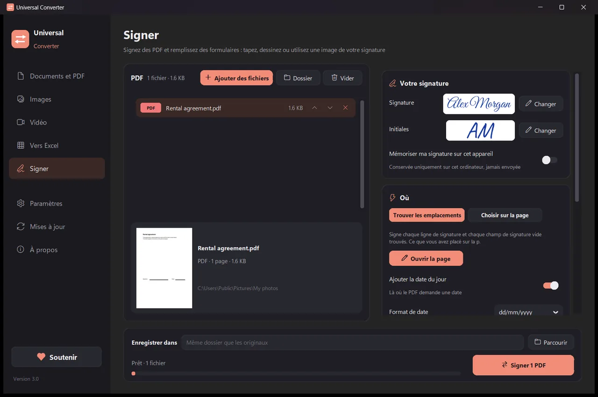

Signer un PDF
Créez votre signature une fois : tapez votre nom et choisissez un style, dessinez-la avec la souris ou le doigt, ou utilisez-en une photo sur papier. Universal Converter trouve les lignes de signature et les champs de signature vides, ou vous cliquez ou touchez la page à l'endroit voulu. Il enregistre une copie signée et laisse l'original tel quel. Il s'agit d'une signature électronique visible, pas d'une signature numérique à certificat.
Installer et mettre à jour
- Ouvrez le fichier .dmg téléchargé et faites glisser Universal Converter dans Applications.
- Ouvrez l'app. La première fois, macOS la bloque car elle n'est pas signée par Apple : cliquez sur Terminé.
- Ouvrez Réglages Système > Confidentialité et sécurité, faites défiler, cliquez sur « Ouvrir quand même » et saisissez votre mot de passe. Ce n'est à faire qu'une fois.
Mises à jour : si vous l'autorisez à la première ouverture, l'app recherche les nouvelles versions à chaque démarrage, vérifie leur signature numérique et les installe quand vous le choisissez.
Installer et mettre à jour
- Touchez « Télécharger pour Android » sur votre téléphone.
- Ouvrez le fichier téléchargé. Si Android le demande, autorisez votre navigateur ou gestionnaire de fichiers à installer des apps.
- Touchez Installer.
Mises à jour : l'app vérifie environ une fois par jour et vous prévient quand une nouvelle version est prête. Téléchargez-la de la même façon et installez-la par-dessus l'ancienne ; vos réglages sont conservés.
Comment faire
- Ouvrez Universal Converter et choisissez Signer à gauche.
- Glissez vos fichiers ou un dossier entier dans la fenêtre, ou cliquez sur Ajouter des fichiers.
- Cliquez sur Modifier à côté de Signature pour créer votre signature, puis choisissez Trouver les emplacements, ou Choisir sur la page et cliquez à l'endroit voulu.
- Cliquez sur Signer. Chaque fichier est enregistré sous nom_signed.pdf à côté de l'original, ou dans le dossier choisi.

Pourquoi hors ligne ?
Universal Converter travaille sur votre propre appareil. Vos fichiers restent privés, les gros fichiers ne posent pas de problème, et cela fonctionne sans connexion internet.
Autres choses qu'il sait faire
- Convertir un PDF en Word
- Convertir des documents Word en PDF
- Réunir plusieurs fichiers en un PDF
- Compresser un PDF à la taille de votre choix
- Convertir les pages d'un PDF en images JPG
- Transformer un document scanné en fichier Word modifiable
- Convertir des images entre JPG, PNG, WEBP et plus
- Redimensionner des images ou les réduire à une taille de fichier
- Réunir des photos en un seul PDF
- Copier le texte d'une image (OCR)
- Compresser une vidéo sans l'envoyer en ligne
- Convertir des vidéos entre MP4, MKV, WebM, MOV et AVI
- Enregistrer le son d'une vidéo en MP3
- Créer un GIF à partir d'une vidéo
- Extraire les tableaux d'un PDF vers Excel
- Convertir un relevé bancaire PDF en Excel
- Extraire les tableaux de factures PDF vers Excel
- Remplir un formulaire PDF